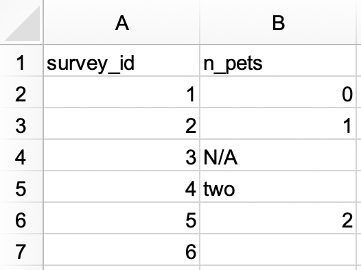
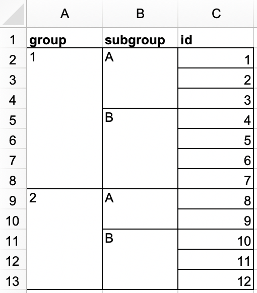
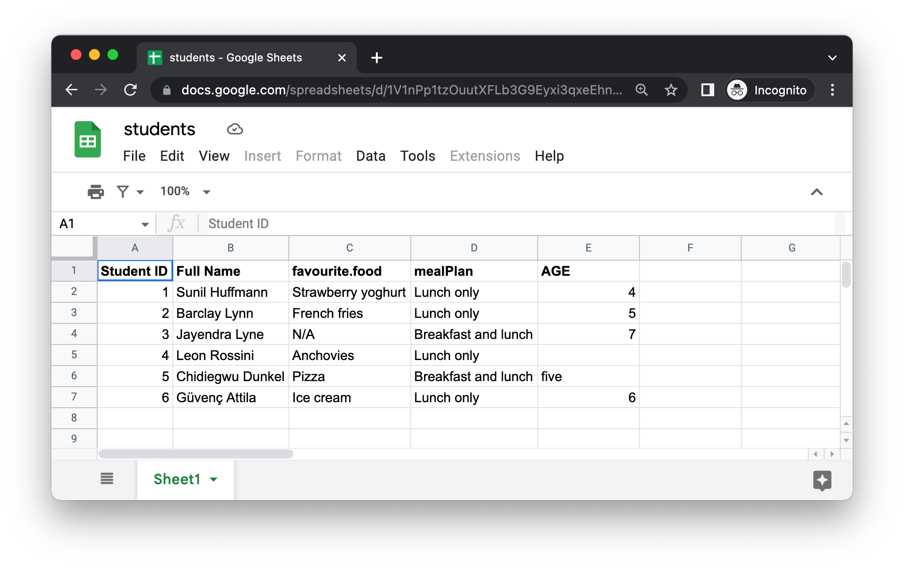

library(readxl)
library(tidyverse)
library(writexl)20 电子表格
20.1 引言
在 章节 7 ，你学习了如何从纯文本文件 (如.csv和.tsv) 中导入数据。现 在是时候学习如何从电子表格（无论是Excel电子表格还是Google表单）中提取数据了。这 将在很大程度上基于你在 章节 7 所学的内容，但当我们处理来自电子表格的数据时，我们还将讨论其他考虑事项和复杂性。
如果你或你的合作者正在使用电子表格组织数据，我们强烈建议你阅读Karl Broman和Kara Woo撰写的论文“Data Organization in Spreadsheets”：https://doi.org/10.1080/00031305.2017.1375989。该 论文中提出的最佳实践将让你在将电子表格中的数据导入R进行分析和可视化时省去许多麻烦。
20.2 Excel
Microsoft Excel 是一款广泛使用的电子表格软件程序，其中数据在电子表格文件内的工作表中组织。
20.2.1 必要条件
在本节中，你将学习如何使用readxl包在R中加载Excel电子表格中的数据。这 个包不是tidyverse的核心部分，所以你需要明确地加载它，但是当您安装tidyverse包时，它会自动安装。稍 后，我们还将使用writexl包，它允许我们创建Excel电子表格。
20.2.2 入门
readxl包的大部分函数都允许你将Excel电子表格加载到R中：
read_xls()用于读取xls格式的Excel文件；read_xlsx()用于读取xlsx格式的Excel文件；read_excel()可以读取xls和xlsx两种格式的文件，它根据输入的文件来猜测文件类型。
这些函数的语法都与其他我们之前介绍的读取其他类型文件的函数 (例如read_csv()，read_table()等) 类似。在 本章的剩余部分，我们将重点介绍read_excel()函数。
20.2.3 读取Excel电子表格
图 20.1 展示了我们将要读入R的Excel电子表格在Excel中的样子。这 个电子表格可以从以下链接下载为Excel文件： https://docs.google.com/spreadsheets/d/1V1nPp1tzOuutXFLb3G9Eyxi3qxeEhnOXUzL5_BcCQ0w/。

read_excel()的第一个参数是要读取的文件的路径。
students <- read_excel("data/students.xlsx")read_excel()会将文件读取为一个 tibble。
students
#> # A tibble: 6 × 5
#> `Student ID` `Full Name` favourite.food mealPlan AGE
#> <dbl> <chr> <chr> <chr> <chr>
#> 1 1 Sunil Huffmann Strawberry yoghurt Lunch only 4
#> 2 2 Barclay Lynn French fries Lunch only 5
#> 3 3 Jayendra Lyne N/A Breakfast and lunch 7
#> 4 4 Leon Rossini Anchovies Lunch only <NA>
#> 5 5 Chidiegwu Dunkel Pizza Breakfast and lunch five
#> 6 6 Güvenç Attila Ice cream Lunch only 6数据中有六名学生，每个学生有五个变量。但 是，在这个数据集中我们可能需要解决几个问题：
列名非常混乱。你 可以提供遵循一致格式的列名；我们推荐使用
col_names参数并遵循snake_case。read_excel( "data/students.xlsx", col_names = c("student_id", "full_name", "favourite_food", "meal_plan", "age") ) #> # A tibble: 7 × 5 #> student_id full_name favourite_food meal_plan age #> <chr> <chr> <chr> <chr> <chr> #> 1 Student ID Full Name favourite.food mealPlan AGE #> 2 1 Sunil Huffmann Strawberry yoghurt Lunch only 4 #> 3 2 Barclay Lynn French fries Lunch only 5 #> 4 3 Jayendra Lyne N/A Breakfast and lunch 7 #> 5 4 Leon Rossini Anchovies Lunch only <NA> #> 6 5 Chidiegwu Dunkel Pizza Breakfast and lunch five #> 7 6 Güvenç Attila Ice cream Lunch only 6不幸的是，这并不完全奏效。我 们现在有了想要的变量名，但是之前作为表头的行现在显示为数据中的第一行观测值。你 可以使用
skip参数来明确跳过那一行。read_excel( "data/students.xlsx", col_names = c("student_id", "full_name", "favourite_food", "meal_plan", "age"), skip = 1 ) #> # A tibble: 6 × 5 #> student_id full_name favourite_food meal_plan age #> <dbl> <chr> <chr> <chr> <chr> #> 1 1 Sunil Huffmann Strawberry yoghurt Lunch only 4 #> 2 2 Barclay Lynn French fries Lunch only 5 #> 3 3 Jayendra Lyne N/A Breakfast and lunch 7 #> 4 4 Leon Rossini Anchovies Lunch only <NA> #> 5 5 Chidiegwu Dunkel Pizza Breakfast and lunch five #> 6 6 Güvenç Attila Ice cream Lunch only 6在
favourite_food列中，其中一个观测值是N/A，它代表“不可用”，但当前它并没有被识别为NA（请注意这个N/A和列表中第四个学生的年龄中的NA是不同的）。你 可以使用na参数来指定哪些字符串应该被识别为NA。默 认情况下，只有""（空字符串，或者在从电子表格中读取数据时一个空单元格或者一个包含公式=NA()的单元格）会被识别为NA。read_excel( "data/students.xlsx", col_names = c("student_id", "full_name", "favourite_food", "meal_plan", "age"), skip = 1, na = c("", "N/A") ) #> # A tibble: 6 × 5 #> student_id full_name favourite_food meal_plan age #> <dbl> <chr> <chr> <chr> <chr> #> 1 1 Sunil Huffmann Strawberry yoghurt Lunch only 4 #> 2 2 Barclay Lynn French fries Lunch only 5 #> 3 3 Jayendra Lyne <NA> Breakfast and lunch 7 #> 4 4 Leon Rossini Anchovies Lunch only <NA> #> 5 5 Chidiegwu Dunkel Pizza Breakfast and lunch five #> 6 6 Güvenç Attila Ice cream Lunch only 6另一个待解决的问题是，
age被读取为字符变量，但实际上它应该是数值型的。就 像使用read_csv()和它的相关函数从平面文件中读取数据一样，你可以为read_excel()提供一个col_types参数，并指定你读取的变量的列类型。不 过，语法有点不同，选项有"skip"、"guess"、"logical"、"numeric"、"date"、"text"或"list"。read_excel( "data/students.xlsx", col_names = c("student_id", "full_name", "favourite_food", "meal_plan", "age"), skip = 1, na = c("", "N/A"), col_types = c("numeric", "text", "text", "text", "numeric") ) #> Warning: Expecting numeric in E6 / R6C5: got 'five' #> # A tibble: 6 × 5 #> student_id full_name favourite_food meal_plan age #> <dbl> <chr> <chr> <chr> <dbl> #> 1 1 Sunil Huffmann Strawberry yoghurt Lunch only 4 #> 2 2 Barclay Lynn French fries Lunch only 5 #> 3 3 Jayendra Lyne <NA> Breakfast and lunch 7 #> 4 4 Leon Rossini Anchovies Lunch only NA #> 5 5 Chidiegwu Dunkel Pizza Breakfast and lunch NA #> 6 6 Güvenç Attila Ice cream Lunch only 6然而，这也没有产生期望的结果。通 过指定
age应该是数值型的，我们已经将包含非数值条目（其值为five）的单元格转换成了NA。在 这种情况下，我们应该将年龄读取为"text"类型，然后在数据加载到R中后再进行更改。students <- read_excel( "data/students.xlsx", col_names = c("student_id", "full_name", "favourite_food", "meal_plan", "age"), skip = 1, na = c("", "N/A"), col_types = c("numeric", "text", "text", "text", "text") ) students <- students |> mutate( age = if_else(age == "five", "5", age), age = parse_number(age) ) students #> # A tibble: 6 × 5 #> student_id full_name favourite_food meal_plan age #> <dbl> <chr> <chr> <chr> <dbl> #> 1 1 Sunil Huffmann Strawberry yoghurt Lunch only 4 #> 2 2 Barclay Lynn French fries Lunch only 5 #> 3 3 Jayendra Lyne <NA> Breakfast and lunch 7 #> 4 4 Leon Rossini Anchovies Lunch only NA #> 5 5 Chidiegwu Dunkel Pizza Breakfast and lunch 5 #> 6 6 Güvenç Attila Ice cream Lunch only 6
加载数据以得到我们想要的精确格式需要多个步骤和反复尝试，这并不意外。数 据科学是一个迭代的过程，而与其他纯文本、矩形数据文件相比，从电子表格中读取数据时的迭代过程可能更加繁琐，因为人类倾向于将数据输入到电子表格中，并不仅仅用于数据存储，还用于共享和交流。
在加载数据并查看之前，我们无法确切知道数据将是什么样子。不 过，实际上还是有一种方法的。你 可以在Excel中打开文件并查看。如 果你打算这样做，我们建议你复制Excel文件以进行交互式打开和浏览，同时保持原始数据文件不变，并从原始文件中读取到R中。这 将确保你在检查数据时不会意外地覆盖电子表格中的任何内容。你 也不应该害怕像我们这样做：加载数据，查看一下，调整你的代码，再次加载，重复这个过程，直到你对结果满意为止。
20.2.4 读取工作表
电子表格与平面文件之间的一个重要区别在于电子表格有多个表单，这些表单被称为工作表。@ fig-penguins-islands 显示了一个包含多个工作表的Excel电子表格。这 些数据来自palmerpenguins包，你可以从 https://docs.google.com/spreadsheets/d/1aFu8lnD_g0yjF5O-K6SFgSEWiHPpgvFCF0NY9D6LXnY/ 下载这个电子表格作为Excel文件。每 个工作表都包含了从不同岛屿收集到的企鹅信息。

你可以利用read_excel()中的sheet参数从电子表格中读取单个工作表。到 目前为止，默认值是第一个工作表。
read_excel("data/penguins.xlsx", sheet = "Torgersen Island")
#> # A tibble: 52 × 8
#> species island bill_length_mm bill_depth_mm flipper_length_mm
#> <chr> <chr> <chr> <chr> <chr>
#> 1 Adelie Torgersen 39.1 18.7 181
#> 2 Adelie Torgersen 39.5 17.399999999999999 186
#> 3 Adelie Torgersen 40.299999999999997 18 195
#> 4 Adelie Torgersen NA NA NA
#> 5 Adelie Torgersen 36.700000000000003 19.3 193
#> 6 Adelie Torgersen 39.299999999999997 20.6 190
#> # ℹ 46 more rows
#> # ℹ 3 more variables: body_mass_g <chr>, sex <chr>, year <dbl>由于字符串 "NA" 没有被识别为真正的 NA（缺失值），一些看起来包含数值数据的变量被读取为字符类型。
penguins_torgersen <- read_excel("data/penguins.xlsx", sheet = "Torgersen Island", na = "NA")
penguins_torgersen
#> # A tibble: 52 × 8
#> species island bill_length_mm bill_depth_mm flipper_length_mm
#> <chr> <chr> <dbl> <dbl> <dbl>
#> 1 Adelie Torgersen 39.1 18.7 181
#> 2 Adelie Torgersen 39.5 17.4 186
#> 3 Adelie Torgersen 40.3 18 195
#> 4 Adelie Torgersen NA NA NA
#> 5 Adelie Torgersen 36.7 19.3 193
#> 6 Adelie Torgersen 39.3 20.6 190
#> # ℹ 46 more rows
#> # ℹ 3 more variables: body_mass_g <dbl>, sex <chr>, year <dbl>或者，您可以使用excel_sheets()来获取 Excel 电子表格中所有工作表的信息，然后读取你感兴趣的一个或多个工作表。
excel_sheets("data/penguins.xlsx")
#> [1] "Torgersen Island" "Biscoe Island" "Dream Island"如果你知道工作表的名称，可以使用read_excel()函数单独读取它们。
penguins_biscoe <- read_excel("data/penguins.xlsx", sheet = "Biscoe Island", na = "NA")
penguins_dream <- read_excel("data/penguins.xlsx", sheet = "Dream Island", na = "NA")在这种情况下，完整的企鹅数据集分布在电子表格的三个工作表中。每 个工作表都有相同数量的列，但行数不同。
dim(penguins_torgersen)
#> [1] 52 8
dim(penguins_biscoe)
#> [1] 168 8
dim(penguins_dream)
#> [1] 124 8我们可以使用bind_rows()将它们放在一起。
penguins <- bind_rows(penguins_torgersen, penguins_biscoe, penguins_dream)
penguins
#> # A tibble: 344 × 8
#> species island bill_length_mm bill_depth_mm flipper_length_mm
#> <chr> <chr> <dbl> <dbl> <dbl>
#> 1 Adelie Torgersen 39.1 18.7 181
#> 2 Adelie Torgersen 39.5 17.4 186
#> 3 Adelie Torgersen 40.3 18 195
#> 4 Adelie Torgersen NA NA NA
#> 5 Adelie Torgersen 36.7 19.3 193
#> 6 Adelie Torgersen 39.3 20.6 190
#> # ℹ 338 more rows
#> # ℹ 3 more variables: body_mass_g <dbl>, sex <chr>, year <dbl>在 章节 26 中，我们将讨论在不重复代码的情况下完成这类任务的方法。
20.2.5 读取部分工作表
由于很多人使用 Excel 电子表格进行展示以及数据存储，因此经常会在电子表格中找到不属于你想要读入 R 的数据的单元格条目。@ fig-deaths-excel 展示了这样一个电子表格：在表格中间是一个类似数据框的内容，但在数据的上方和下方有一些额外的文本单元格。
![A look at the deaths spreadsheet in Excel. The spreadsheet has four rows on top that contain non-data information; the text 'For the same of consistency in the data layout, which is really a beautiful thing, I will keep making notes up here.' is spread across cells in these top four rows. Then, there is a data frame that includes information on deaths of 10 famous people, including their names, professions, ages, whether they have kids or not, date of birth and death. At the bottom, there are four more rows of non-data information; the text 'This has been really fun, but we're signing off now!' is spread across cells in these bottom four rows.](screenshots/import-spreadsheets-deaths.png)
这个电子表格是 readxl 包提供的一个示例电子表格。你 可以使用readxl_example()函数来定位这个电子表格在你系统上安装该包的目录中的位置。这 个函数会返回电子表格的路径，你可以像平常一样在read_excel()中使用它。
deaths_path <- readxl_example("deaths.xlsx")
deaths <- read_excel(deaths_path)
#> New names:
#> • `` -> `...2`
#> • `` -> `...3`
#> • `` -> `...4`
#> • `` -> `...5`
#> • `` -> `...6`
deaths
#> # A tibble: 18 × 6
#> `Lots of people` ...2 ...3 ...4 ...5 ...6
#> <chr> <chr> <chr> <chr> <chr> <chr>
#> 1 simply cannot resi… <NA> <NA> <NA> <NA> some notes
#> 2 at the top <NA> of their spreadsh…
#> 3 or merging <NA> <NA> <NA> cells
#> 4 Name Profession Age Has kids Date of birth Date of death
#> 5 David Bowie musician 69 TRUE 17175 42379
#> 6 Carrie Fisher actor 60 TRUE 20749 42731
#> # ℹ 12 more rows前三行和最后四行不属于数据框。虽 然可以使用skip和n_max参数来消除这些多余的行，但我们建议使用单元格范围。在 Excel 中，左上角的单元格是 A1。当 你向右移动到其他列时，单元格标签会按照字母顺序向下移动，即 B1、C1 等。当 你向下移动到一个列时，单元格标签中的数字会增加，即 A2、A3 等。
在这里，我们想要读取的数据从 A5 单元格开始，到 F15 单元格结束。在 电子表格表示法中，这是 A5:F15，我们将它提供给range参数：
read_excel(deaths_path, range = "A5:F15")
#> # A tibble: 10 × 6
#> Name Profession Age `Has kids` `Date of birth`
#> <chr> <chr> <dbl> <lgl> <dttm>
#> 1 David Bowie musician 69 TRUE 1947-01-08 00:00:00
#> 2 Carrie Fisher actor 60 TRUE 1956-10-21 00:00:00
#> 3 Chuck Berry musician 90 TRUE 1926-10-18 00:00:00
#> 4 Bill Paxton actor 61 TRUE 1955-05-17 00:00:00
#> 5 Prince musician 57 TRUE 1958-06-07 00:00:00
#> 6 Alan Rickman actor 69 FALSE 1946-02-21 00:00:00
#> # ℹ 4 more rows
#> # ℹ 1 more variable: `Date of death` <dttm>20.2.6 数据类型
在 CSV 文件中所有的值都是字符串。这 并不一定符合数据的实际情况，但它是简单的：一切都是字符串。I n CSV files, all values are strings. This is not particularly true to the data, but it is simple: everything is a string.
Excel 电子表格中的底层数据更为复杂。一 个单元格可以是以下四种类型之一：
一个布尔值，如
TRUE、FALSE或NA；一个数字，如 “10” 或 “10.5”；
一个日期时间，也可以包含时间，如 “11/1/21” 或 “11/1/21 3:00 PM”；
一个文本字符串，如 “ten”。
在处理电子表格数据时，重要的是要记住底层数据可能与您在单元格中看到的内容大不相同。例 如，Excel 没有整数的概念。所 有数字都以浮点数形式存储，但您可以选择以可自定义的小数位数显示数据。类 似地，日期实际上是作为数字存储的，特别是自 1970 年 1 月 1 日以来的秒数。您 可以在 Excel 中应用格式设置来自定义日期的显示方式。令 人困惑的是，还可能有看起来像是数字但实际上是字符串的内容（例如，在 Excel 单元格中输入 '10）。
底层数据存储方式与显示方式之间的差异可能会在将数据加载到 R 时造成意外。默 认情况下，readxl 会猜测给定列的数据类型。建 议的工作流程是让 readxl 猜测列类型，确认你对猜测的列类型满意，如果不满意，则返回并重新导入，指定col_types，如 小节 20.2.3 所示。
另一个挑战是当你的 Excel 电子表格中的某一列包含这些类型的混合数据时，例如，一些单元格是数字，其他是文本，其他是日期。当 将数据导入 R 时，readxl 必须做出一些决策。在 这些情况下，你可以将该列的类型设置为 "list"，将该列加载为长度为 1 的向量列表，其中向量的每个元素的类型都将被猜测。
有时数据会以更特殊的方式存储，比如单元格背景的颜色，或者文本是否为粗体。在 这种情况下，你可能会发现 tidyxl包很有用。请 访问https://nacnudus.github.io/spreadsheet-munging-strategies/ 以获取更多关于从 Excel 处理非表格数据的策略。
20.2.7 写入Excel
让我们创建一个小的数据框，然后将其写入Excel。请 注意，item是一个因子，而quantity是一个整数。
bake_sale <- tibble(
item = factor(c("brownie", "cupcake", "cookie")),
quantity = c(10, 5, 8)
)
bake_sale
#> # A tibble: 3 × 2
#> item quantity
#> <fct> <dbl>
#> 1 brownie 10
#> 2 cupcake 5
#> 3 cookie 8您可以使用 writexl包中的 write_xlsx() 函数将数据作为 Excel 文件写回到磁盘中：
write_xlsx(bake_sale, path = "data/bake-sale.xlsx")图 20.4 展示了在 Excel 中数据的样子。请 注意，列名已经被包含并加粗了。这 些可以通过将 col_names 和 format_headers 参数设置为 FALSE 来关闭。

就像从 CSV 读取数据一样，当我们重新将数据读入时，数据类型的信息会丢失。这 使得Excel文件在缓存中间结果时也不可靠。对 于替代方案，请参阅 小节 7.5。
read_excel("data/bake-sale.xlsx")
#> # A tibble: 3 × 2
#> item quantity
#> <chr> <dbl>
#> 1 brownie 10
#> 2 cupcake 5
#> 3 cookie 820.2.8 格式化输出
writexl包是一个轻量级的解决方案，用于编写简单的Excel电子表格。但 如果你对在电子表格内部写入工作表以及样式设置等额外功能感兴趣，那么你可能需要使用openxlsx包。我 们不会在这里详细介绍如何使用这个包，但我们建议你阅读https://ycphs.github.io/openxlsx/articles/Formatting.html，以获得有关使用openxlsx从R将数据写入Excel的更多格式化功能的广泛讨论。
请注意，这个包不是tidyverse的一部分，因此它的函数和工作流程可能会让你感到陌生。例 如，函数名是驼峰命名法（camelCase），多个函数不能在管道中组合使用，并且参数的顺序与tidyverse中的习惯不同。不 过，这没问题。随 着你的R语言学习和使用范围扩展到本书之外，你将遇到许多用于实现R中特定目标的R包的不同使用风格。熟 悉新包中使用的编码风格的一个好方法是运行函数文档中提供的示例，以了解语法和输出格式，并阅读可能随包一起提供的任何说明文档。
20.2.9 练习
在Excel文件中创建以下数据集，并将其保存为
survey.xlsx。或 者，从这里下载为Excel文件。
然后将其读入R，其中
survey_id作为字符变量，n_pets作为数值变量。#> # A tibble: 6 × 2 #> survey_id n_pets #> <chr> <dbl> #> 1 1 0 #> 2 2 1 #> 3 3 NA #> 4 4 2 #> 5 5 2 #> 6 6 NA在另一个Excel文件中，创建以下数据集并将其保存为
roster.xlsx。或 者，从这里下载为Excel文件。
然后，将其读入R。生 成的数据框帧应该称为
roster，如下所示。#> # A tibble: 12 × 3 #> group subgroup id #> <dbl> <chr> <dbl> #> 1 1 A 1 #> 2 1 A 2 #> 3 1 A 3 #> 4 1 B 4 #> 5 1 B 5 #> 6 1 B 6 #> 7 1 B 7 #> 8 2 A 8 #> 9 2 A 9 #> 10 2 B 10 #> 11 2 B 11 #> 12 2 B 12在新的Excel文件中，创建以下数据集并将其保存为
sale .xlsx。或 者，从这里下载为Excel文件。
a. 读取
sale .xlsx并保存为sales。数 据框架应该如下所示，以id和n作为列名，共有9行。#> # A tibble: 9 × 2 #> id n #> <chr> <chr> #> 1 Brand 1 n #> 2 1234 8 #> 3 8721 2 #> 4 1822 3 #> 5 Brand 2 n #> 6 3333 1 #> 7 2156 3 #> 8 3987 6 #> 9 3216 5b. 进一步修改
sales，转换为以下整齐格式，其中包含三列 (brand、id和n) 和7行数据。注 意id和n是数字，brand是字符变量。#> # A tibble: 7 × 3 #> brand id n #> <chr> <dbl> <dbl> #> 1 Brand 1 1234 8 #> 2 Brand 1 8721 2 #> 3 Brand 1 1822 3 #> 4 Brand 2 3333 1 #> 5 Brand 2 2156 3 #> 6 Brand 2 3987 6 #> 7 Brand 2 3216 5重新创建
bake_sale数据框，使用openxlsx包的write.xlsx()函数将其写入Excel文件。在 章节 7 中，你了解了
janitor::clean_names()函数，该函数将列名转换为蛇形大小写。阅 读本节前面介绍的students.xlsx文件，使用该函数“清除”列名。如果尝试使用
read_xls()读入扩展名为.xlsx的文件，会发生什么情况？
20.3 Google表单
Google表单是另一个广泛使用的电子表格程序。它 是免费的，基于网络。就 像Excel一样，在Google表单中，数据被组织在电子表格文件内的工作表（也称为表单）中。
20.3.1 必要条件
本节也关注电子表格，但这次你将使用googlesheets4包从Google表单中加载数据。这 个包也不是tidyverse的核心部分，你需要明确加载它。
library(googlesheets4)
library(tidyverse)关于包的名称的简要说明：googlesheets4使用Sheets API v4的v4版本来为Google表单提供R接口，因此得名。
20.3.2 入门
googlesheets4包的主要函数是read_sheet()，它可以从URL或文件ID中读取Google表单。这 个函数也叫做range_read()。
您还可以使用gs4_create()来创建一个全新的表单，或者使用sheet_write()及其相关函数写入现有表单。
在本节中，我们将使用与Excel部分相同的数据集，以突出从Excel和Google表单读取数据的工作流程之间的相似性和差异。r eadxl和googlesheets4包都旨在模仿readr包的功能，readr包提供了在 章节 7 见提到的read_csv()函数。因 此，许多任务可以简单地通过用read_sheet()替换read_excel()来完成。然 而，你也会看到Excel和Google表单的行为并不完全相同，因此其他任务可能需要对函数调用进行进一步的更新。
20.3.3 读取Google表单
图 20.5 展示了我们将要读取到R中的电子表格在Google表单中的样子。这 与@fig-students-excel 中的数据集相同，只是它被存储在Google表单中而不是Excel中。

read_sheet()的第一个参数是要读取的文件的URL，它返回一个tibble:
https://docs.google.com/spreadsheets/d/1V1nPp1tzOuutXFLb3G9Eyxi3qxeEhnOXUzL5_BcCQ0w. 这些URL使用起来并不方便，因此通常希望通过其ID来标识表单。
gs4_deauth()# students_sheet_id <- "1V1nPp1tzOuutXFLb3G9Eyxi3qxeEhnOXUzL5_BcCQ0w"
# students <- read_sheet(students_sheet_id)
# students就像我们使用read_excel()一样，我们可以为read_sheet()提供列名、NA字符串和列类型。
# students <- read_sheet(
# students_sheet_id,
# col_names = c("student_id", "full_name", "favourite_food", "meal_plan", "age"),
# skip = 1,
# na = c("", "N/A"),
# col_types = "dcccc"
# )
#
# students请注意，我们这里使用短代码对列类型进行了稍微不同的定义。例 如，“dcccc”代表“double, character, character, character, character”。
同样，也可以从Google表单中读取单个表单。让 我们从penguins Google Sheet中读取“Torgersen Island”表单：
# penguins_sheet_id <- "1aFu8lnD_g0yjF5O-K6SFgSEWiHPpgvFCF0NY9D6LXnY"
# read_sheet(penguins_sheet_id, sheet = "Torgersen Island")你可以使用sheet_names()函数来获取Google表单中所有表单的列表：
# sheet_names(penguins_sheet_id)最后，就像使用read_excel()一样，我们可以通过在read_sheet()中定义一个范围来读取Google表单的一部分。请 注意，下面我们还使用了gs4_example()函数来定位与googlesheets4包一起提供的示例Google表单。
# deaths_url <- gs4_example("deaths")
# deaths <- read_sheet(deaths_url, range = "A5:F15")
# deaths20.3.4 写入Google表单
您可以使用write_sheet()函数将R中的数据写入Google表单。第 一个参数是要写入的数据框，第二个参数是要写入的Google表单的名称 (或其他标识符)：
# write_sheet(bake_sale, ss = "bake-sale")如果您想将数据写入Google表单中的特定表单，您还可以使用sheet参数来指定它。
# write_sheet(bake_sale, ss = "bake-sale", sheet = "Sales")20.3.5 身份验证
虽然你可以在没有使用Google帐户进行身份验证的情况下使用gs4_deauth()从公共的Google表单中读取数据，但读取私有表单或写入表单需要身份验证，以便googlesheets4 能够查看和管理您的Google表单。
当你尝试读取需要身份验证的表单时，googlesheets4 会引导你访问一个网页，提示你登录Google帐户并授予权限，以便代表你使用Google表单进行操作。但 是，如果你想指定特定的Google帐户、身份验证范围等，可以使用gs4_auth()来完成，例如gs4_auth(email = "mine@example.com")，这将强制使用与特定电子邮件关联的令牌。有 关身份验证的更多详细信息，我们建议您阅读googlesheets4 的身份验证文档：https://googlesheets4.tidyverse.org/articles/auth.html 。
20.3.6 练习
从Excel和Google表单中读取本章前面提到的
students数据集，不向read_excel()和read_sheet()函数提供任何额外的参数。在 R中生成的数据框是否完全相同？如 果不同，它们有何不同？从 https://pos.it/r4ds-survey 读取名为survey的Google表单，其中
survey_id作为字符变量，n_pets作为数值变量。从 https://pos.it/r4ds-roster 读取名为roster的Google表单。生 成的数据框应命名为
roster，并应如下所示。
20.4 小结
Microsoft Excel和Google Sheets是两个最受欢迎的电子表格系统。能 够直接从R与存储在Excel和Google Sheets文件中的数据进行交互是一项超能力！在 本章中，你学习了如何使用readxl包中的read_excel()函数从Excel电子表格读取数据到R中，以及如何使用googlesheets4包中的read_sheet()函数从Google Sheets读取数据。这 些函数彼此之间的工作方式非常相似，并且具有类似的参数来指定列名、NA字符串、要跳过的文件顶部的行等。此 外，这两个函数都允许你从电子表格中读取单个表单。
另一方面，写入Excel文件需要不同的包和函数（writexl::write_xlsx()），而你可以使用googlesheets4包的write_sheet()函数将数据写入Google Sheets。
在下一章中，你将学习一种不同的数据源以及如何将数据从该数据源读取到R中：数据库。